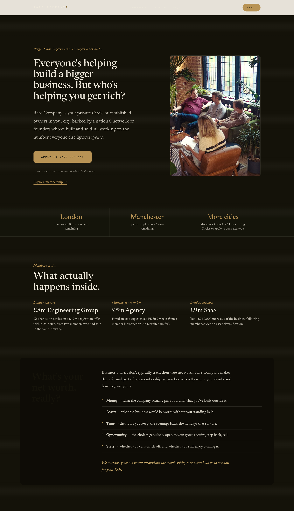
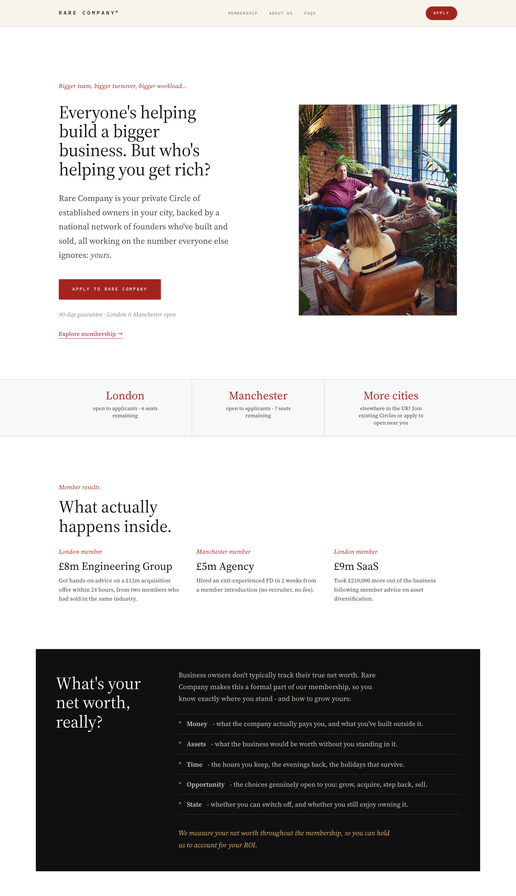
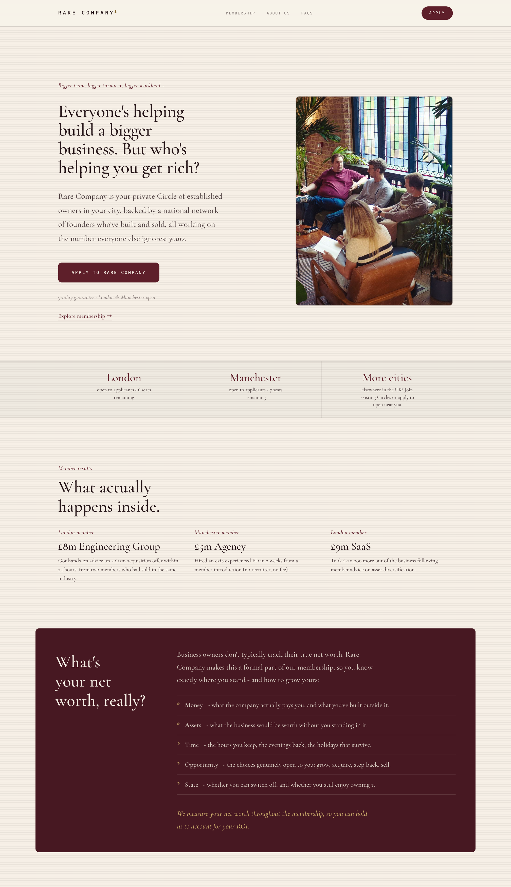
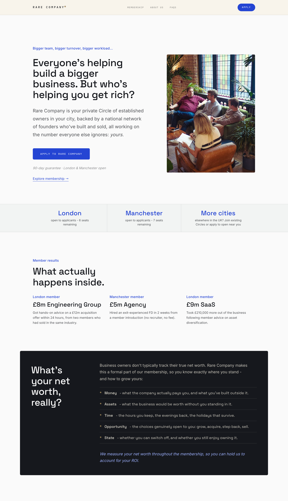

The Club
Espresso dark, warm ivory, gold primary. Private members' bar. Most "exclusive", least readable for long pages.

Same content, same layout - only the skin changes. Rendered from the live homepage, 29 July 2026. The current live brand (ivory, racing green, gold) is the control.
Espresso dark, warm ivory, gold primary. Private members' bar. Most "exclusive", least readable for long pages.

White, near-black, editorial red. FT-adjacent credibility, minimal warmth.

Cream, burgundy, gold, Garamond. Old-club handsome; skews the perceived member age up.

Grey, cobalt, grotesk sans. Tech-landing-page zone - the Hampton axis. Weakest fit for a £1k/month private membership.
